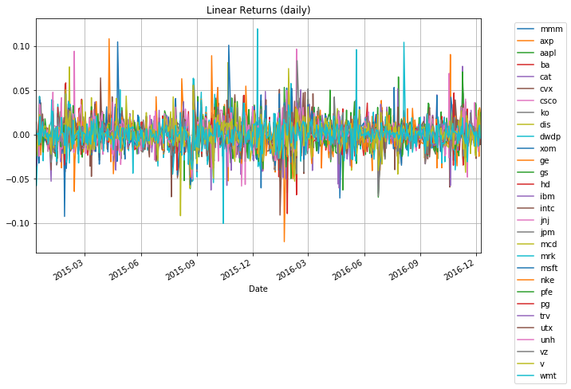
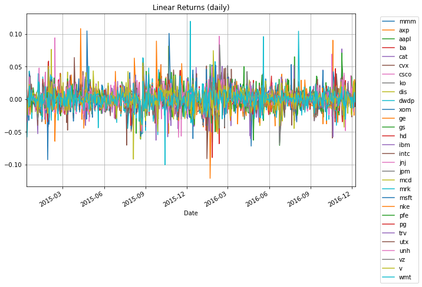

Portfolio Optimization
Contents
This notebook contains course material from CBE40455 by Jeffrey Kantor (jeff at nd.edu); the content is available on Github. The text is released under the CC-BY-NC-ND-4.0 license, and code is released under the MIT license.
< Real Options | Contents | Portfolio Optimization using Mean Absolute Deviation >


Portfolio Optimization#
This Jupyter notebook demonstrates the formulation and solution of portfolio optimization problems.
Import libraries#
import matplotlib.pyplot as plt
import numpy as np
import random
# data wrangling libraries
import pandas_datareader.data as web
import pandas as pd
import datetime
%matplotlib inline
Load Price Data#
Here we create several groups of possible trading symbols, and select one for study.
# Companies of the Dow Jones Industrial Average
djia = ['mmm','axp','aapl','ba','cat','cvx','csco','ko','dis','dwdp',
'xom','ge','gs','hd','ibm','intc','jnj','jpm','mcd','mrk',
'msft','nke','pfe','pg','trv','utx','unh','vz','v','wmt']
# Representative ETF's and ETN's from the energy sector
energy = ['oil','uso','uga','uhn','kol','ung']
# Standard indices
indices = ['^dji','^gspc']
# pick one of these groups for study
syms = djia
print(syms)
['mmm', 'axp', 'aapl', 'ba', 'cat', 'cvx', 'csco', 'ko', 'dis', 'dwdp', 'xom', 'ge', 'gs', 'hd', 'ibm', 'intc', 'jnj', 'jpm', 'mcd', 'mrk', 'msft', 'nke', 'pfe', 'pg', 'trv', 'utx', 'unh', 'vz', 'v', 'wmt']
Price data is retrieved using the Pandas DataReader function. The first price data set consists of historical data that will be used to design investment portfolios. The second set will be used for simulation and evaluation of resulting portfolios. The use of ‘out-of-sample’ data for evaluation is standard practice in these types of applications.
t2 = datetime.datetime.now()
t1 = t2 - datetime.timedelta(365)
t0 = t1 - datetime.timedelta(2*365)
Prices = pd.DataFrame()
PricesSim = pd.DataFrame()
for s in syms:
print(s,end='')
k = 3
while k > 0:
try:
Prices[s] = web.DataReader(s,'yahoo',t0,t2)['Adj Close']
print(' ok.')
k = 0
except:
k -= 1
print(' fail. Try again.',end='')
mmm ok.
axp fail. Try again. ok.
aapl ok.
ba fail. Try again. ok.
cat fail. Try again. ok.
cvx ok.
csco fail. Try again. ok.
ko ok.
dis ok.
dwdp ok.
xom ok.
ge ok.
gs ok.
hd fail. Try again. ok.
ibm fail. Try again. ok.
intc ok.
jnj ok.
jpm ok.
mcd ok.
mrk ok.
msft ok.
nke ok.
pfe ok.
pg ok.
trv ok.
utx ok.
unh fail. Try again. ok.
vz ok.
v ok.
wmt ok.
Plot Price and Returns Data#
idx= Prices.index
Prices.loc[idx[1],'axp']
84.020606999999998
Prices.plot(figsize=(10,6))
plt.title('Prices for Selected Goods')
plt.ylabel('Price')
plt.legend(loc='upper right',bbox_to_anchor=(1.2, 1.0))
plt.grid()
Returns = Prices.diff()/Prices.shift(1)
Returns.dropna(inplace=True)
Returns.plot(figsize=(10,6))
plt.title('Linear Returns (daily)')
plt.legend(loc='upper right',bbox_to_anchor=(1.2, 1.0))
plt.grid()
 

Prices.loc[idx[1],'axp']
Prices.iloc[0,0]
145.423462
Linear and Log Returns#
rlin = Returns.mean()
stdev = Returns.std()
rlog = np.log(Prices).diff().mean()
plt.figure(figsize=(10,6))
plt.subplot(2,1,2)
(252*rlin).plot(kind='bar')
plt.title('Annualized Return')
plt.grid()
plt.subplot(2,1,1)
(np.sqrt(252)*stdev).plot(kind='bar')
plt.title('Annualized Volatility')
plt.grid()
plt.tight_layout()
print( "Annualized Returns and Standard Deviation\n")
print( "Symbol r_lin r_log r_lin-s^2/2 stdev")
for s in Returns.columns.values.tolist():
print("{0:5s}".format(s),end='')
print(" {0:9.5f}".format(252.0*rlin[s]),end='')
print(" {0:9.5f}".format(252.0*rlog[s]),end='')
print(" {0:9.5f}".format(252.0*(rlin[s] - 0.5*stdev[s]**2)),end='')
print(" {0:9.5f}".format(np.sqrt(252.0)*stdev[s]))
Annualized Returns and Standard Deviation
Symbol r_lin r_log r_lin-s^2/2 stdev
mmm 0.10073 0.08642 0.08642 0.16915
axp -0.06379 -0.09123 -0.09096 0.23313
aapl 0.06037 0.02830 0.02827 0.25338
ba 0.16965 0.14294 0.14309 0.23045
cat 0.08626 0.05194 0.05190 0.26216
cvx 0.12736 0.09362 0.09348 0.26033
csco 0.11347 0.08827 0.08806 0.22545
ko 0.04776 0.03714 0.03715 0.14571
dis 0.10763 0.08730 0.08741 0.20109
dwdp 0.15613 0.12257 0.12227 0.26023
xom 0.05831 0.03608 0.03599 0.21131
ge 0.16780 0.14793 0.14772 0.20042
gs 0.16050 0.12968 0.12973 0.24807
hd 0.18924 0.16987 0.16989 0.19671
ibm 0.07498 0.05315 0.05323 0.20861
intc 0.04976 0.02191 0.02199 0.23568
jnj 0.06764 0.05610 0.05606 0.15219
jpm 0.22718 0.19929 0.19927 0.23628
mcd 0.19668 0.18119 0.18113 0.17635
mrk 0.06571 0.04256 0.04232 0.21631
msft 0.19944 0.16628 0.16612 0.25817
nke 0.06982 0.04423 0.04408 0.22688
pfe 0.05137 0.03247 0.03233 0.19513
pg 0.01160 -0.00003 -0.00004 0.15260
trv 0.10497 0.08977 0.08983 0.17399
utx 0.02575 0.00841 0.00842 0.18614
unh 0.28231 0.25667 0.25667 0.22645
vz 0.11293 0.10028 0.10026 0.15917
v 0.13025 0.10617 0.10611 0.21973
wmt -0.03636 -0.05646 -0.05640 0.20018
Covariance and Correlation Matrices#
The covariance matrix is easily computed using the pandas .cov and .corr() functions.
sigma = Returns.cov()
rho = Returns.corr()
pd.options.display.float_format = '{:,.6f}'.format
print("\nCovariance Matrix\n")
print(sigma)
print("\nCorrelation Coefficients\n")
print(rho)
Covariance Matrix
mmm axp aapl ba cat cvx csco ko \
mmm 0.000114 0.000057 0.000077 0.000085 0.000092 0.000086 0.000078 0.000050
axp 0.000057 0.000216 0.000057 0.000080 0.000097 0.000070 0.000060 0.000038
aapl 0.000077 0.000057 0.000255 0.000103 0.000106 0.000090 0.000109 0.000052
ba 0.000085 0.000080 0.000103 0.000211 0.000122 0.000100 0.000090 0.000056
cat 0.000092 0.000097 0.000106 0.000122 0.000273 0.000159 0.000102 0.000042
cvx 0.000086 0.000070 0.000090 0.000100 0.000159 0.000269 0.000107 0.000062
csco 0.000078 0.000060 0.000109 0.000090 0.000102 0.000107 0.000202 0.000058
ko 0.000050 0.000038 0.000052 0.000056 0.000042 0.000062 0.000058 0.000084
dis 0.000062 0.000060 0.000083 0.000086 0.000078 0.000079 0.000092 0.000046
dwdp 0.000089 0.000075 0.000096 0.000114 0.000138 0.000138 0.000088 0.000055
xom 0.000074 0.000051 0.000077 0.000085 0.000124 0.000180 0.000090 0.000050
ge 0.000082 0.000081 0.000080 0.000097 0.000116 0.000107 0.000084 0.000051
gs 0.000093 0.000120 0.000112 0.000128 0.000157 0.000129 0.000109 0.000053
hd 0.000071 0.000067 0.000081 0.000083 0.000073 0.000070 0.000083 0.000050
ibm 0.000076 0.000079 0.000090 0.000097 0.000107 0.000103 0.000096 0.000051
intc 0.000080 0.000073 0.000108 0.000099 0.000116 0.000108 0.000121 0.000058
jnj 0.000061 0.000048 0.000060 0.000065 0.000058 0.000065 0.000063 0.000041
jpm 0.000094 0.000114 0.000105 0.000123 0.000140 0.000134 0.000115 0.000054
mcd 0.000059 0.000041 0.000062 0.000065 0.000047 0.000064 0.000067 0.000053
mrk 0.000067 0.000074 0.000077 0.000084 0.000079 0.000085 0.000083 0.000047
msft 0.000083 0.000076 0.000134 0.000091 0.000110 0.000112 0.000126 0.000067
nke 0.000064 0.000070 0.000084 0.000091 0.000064 0.000062 0.000082 0.000054
pfe 0.000054 0.000063 0.000066 0.000064 0.000066 0.000067 0.000067 0.000035
pg 0.000056 0.000040 0.000061 0.000062 0.000052 0.000070 0.000065 0.000057
trv 0.000070 0.000056 0.000070 0.000079 0.000073 0.000080 0.000075 0.000057
utx 0.000078 0.000072 0.000077 0.000098 0.000103 0.000089 0.000085 0.000048
unh 0.000063 0.000083 0.000087 0.000084 0.000068 0.000071 0.000071 0.000044
vz 0.000055 0.000038 0.000058 0.000057 0.000062 0.000075 0.000060 0.000051
v 0.000075 0.000086 0.000102 0.000091 0.000088 0.000088 0.000097 0.000055
wmt 0.000049 0.000037 0.000053 0.000058 0.000046 0.000051 0.000070 0.000043
dis dwdp ... msft nke pfe pg trv \
mmm 0.000062 0.000089 ... 0.000083 0.000064 0.000054 0.000056 0.000070
axp 0.000060 0.000075 ... 0.000076 0.000070 0.000063 0.000040 0.000056
aapl 0.000083 0.000096 ... 0.000134 0.000084 0.000066 0.000061 0.000070
ba 0.000086 0.000114 ... 0.000091 0.000091 0.000064 0.000062 0.000079
cat 0.000078 0.000138 ... 0.000110 0.000064 0.000066 0.000052 0.000073
cvx 0.000079 0.000138 ... 0.000112 0.000062 0.000067 0.000070 0.000080
csco 0.000092 0.000088 ... 0.000126 0.000082 0.000067 0.000065 0.000075
ko 0.000046 0.000055 ... 0.000067 0.000054 0.000035 0.000057 0.000057
dis 0.000160 0.000079 ... 0.000088 0.000074 0.000056 0.000050 0.000069
dwdp 0.000079 0.000269 ... 0.000104 0.000078 0.000078 0.000060 0.000072
xom 0.000070 0.000115 ... 0.000082 0.000050 0.000064 0.000060 0.000067
ge 0.000070 0.000108 ... 0.000097 0.000074 0.000069 0.000059 0.000074
gs 0.000105 0.000132 ... 0.000122 0.000096 0.000090 0.000061 0.000102
hd 0.000078 0.000082 ... 0.000094 0.000104 0.000066 0.000050 0.000073
ibm 0.000073 0.000097 ... 0.000108 0.000070 0.000061 0.000058 0.000070
intc 0.000084 0.000111 ... 0.000139 0.000077 0.000067 0.000069 0.000075
jnj 0.000051 0.000061 ... 0.000070 0.000055 0.000064 0.000049 0.000057
jpm 0.000098 0.000131 ... 0.000122 0.000095 0.000090 0.000063 0.000106
mcd 0.000056 0.000074 ... 0.000084 0.000070 0.000050 0.000049 0.000059
mrk 0.000058 0.000082 ... 0.000094 0.000063 0.000105 0.000053 0.000063
msft 0.000088 0.000104 ... 0.000264 0.000101 0.000078 0.000083 0.000084
nke 0.000074 0.000078 ... 0.000101 0.000204 0.000062 0.000056 0.000066
pfe 0.000056 0.000078 ... 0.000078 0.000062 0.000151 0.000041 0.000057
pg 0.000050 0.000060 ... 0.000083 0.000056 0.000041 0.000092 0.000057
trv 0.000069 0.000072 ... 0.000084 0.000066 0.000057 0.000057 0.000120
utx 0.000067 0.000090 ... 0.000084 0.000066 0.000061 0.000052 0.000070
unh 0.000069 0.000081 ... 0.000091 0.000075 0.000090 0.000050 0.000076
vz 0.000049 0.000064 ... 0.000069 0.000044 0.000042 0.000050 0.000058
v 0.000089 0.000100 ... 0.000130 0.000100 0.000076 0.000065 0.000078
wmt 0.000046 0.000047 ... 0.000061 0.000058 0.000050 0.000049 0.000047
utx unh vz v wmt
mmm 0.000078 0.000063 0.000055 0.000075 0.000049
axp 0.000072 0.000083 0.000038 0.000086 0.000037
aapl 0.000077 0.000087 0.000058 0.000102 0.000053
ba 0.000098 0.000084 0.000057 0.000091 0.000058
cat 0.000103 0.000068 0.000062 0.000088 0.000046
cvx 0.000089 0.000071 0.000075 0.000088 0.000051
csco 0.000085 0.000071 0.000060 0.000097 0.000070
ko 0.000048 0.000044 0.000051 0.000055 0.000043
dis 0.000067 0.000069 0.000049 0.000089 0.000046
dwdp 0.000090 0.000081 0.000064 0.000100 0.000047
xom 0.000071 0.000060 0.000062 0.000074 0.000045
ge 0.000087 0.000077 0.000057 0.000089 0.000051
gs 0.000103 0.000108 0.000060 0.000121 0.000048
hd 0.000073 0.000084 0.000054 0.000095 0.000064
ibm 0.000089 0.000054 0.000064 0.000090 0.000053
intc 0.000089 0.000077 0.000062 0.000099 0.000050
jnj 0.000056 0.000059 0.000047 0.000066 0.000046
jpm 0.000100 0.000101 0.000061 0.000118 0.000058
mcd 0.000047 0.000052 0.000049 0.000072 0.000046
mrk 0.000071 0.000085 0.000058 0.000086 0.000057
msft 0.000084 0.000091 0.000069 0.000130 0.000061
nke 0.000066 0.000075 0.000044 0.000100 0.000058
pfe 0.000061 0.000090 0.000042 0.000076 0.000050
pg 0.000052 0.000050 0.000050 0.000065 0.000049
trv 0.000070 0.000076 0.000058 0.000078 0.000047
utx 0.000137 0.000069 0.000057 0.000081 0.000057
unh 0.000069 0.000203 0.000042 0.000082 0.000059
vz 0.000057 0.000042 0.000101 0.000060 0.000050
v 0.000081 0.000082 0.000060 0.000192 0.000055
wmt 0.000057 0.000059 0.000050 0.000055 0.000159
[30 rows x 30 columns]
Correlation Coefficients
mmm axp aapl ba cat cvx csco ko \
mmm 1.000000 0.364655 0.451973 0.547545 0.522230 0.494760 0.517919 0.515660
axp 0.364655 1.000000 0.242425 0.375220 0.399106 0.289644 0.289316 0.281259
aapl 0.451973 0.242425 1.000000 0.445385 0.400989 0.342746 0.479134 0.356953
ba 0.547545 0.375220 0.445385 1.000000 0.510478 0.420883 0.437872 0.421626
cat 0.522230 0.399106 0.400989 0.510478 1.000000 0.587187 0.432973 0.278986
cvx 0.494760 0.289644 0.342746 0.420883 0.587187 1.000000 0.460938 0.412001
csco 0.517919 0.289316 0.479134 0.437872 0.432973 0.460938 1.000000 0.446405
ko 0.515660 0.281259 0.356953 0.421626 0.278986 0.412001 0.446405 1.000000
dis 0.462545 0.321093 0.411082 0.469068 0.370606 0.382306 0.508937 0.392950
dwdp 0.508716 0.310577 0.366782 0.480226 0.507920 0.511553 0.376463 0.366010
xom 0.520763 0.260883 0.364549 0.438791 0.566202 0.822994 0.477664 0.409703
ge 0.611574 0.438860 0.395857 0.530476 0.554713 0.518193 0.469604 0.440906
gs 0.555655 0.524055 0.448399 0.563947 0.609206 0.504906 0.489024 0.371298
hd 0.534012 0.365528 0.410687 0.463156 0.356984 0.345962 0.474358 0.437787
ibm 0.542878 0.410789 0.426873 0.508687 0.491349 0.477953 0.514722 0.425589
intc 0.502933 0.336081 0.457084 0.461289 0.473298 0.443811 0.573555 0.423005
jnj 0.597834 0.339867 0.392625 0.467654 0.368226 0.411066 0.459955 0.470326
jpm 0.593096 0.522423 0.443882 0.569564 0.570202 0.548889 0.542419 0.395490
mcd 0.502439 0.248318 0.350349 0.400600 0.256740 0.351741 0.426814 0.521860
mrk 0.461245 0.370588 0.353349 0.425902 0.349173 0.378415 0.430047 0.374393
msft 0.476105 0.316735 0.515070 0.384549 0.408757 0.421108 0.547033 0.447756
nke 0.421223 0.332977 0.367831 0.438339 0.270978 0.264115 0.404063 0.413838
pfe 0.415463 0.347678 0.336592 0.361405 0.326920 0.331446 0.385546 0.313744
pg 0.547120 0.283407 0.398504 0.446439 0.325066 0.446879 0.472846 0.648127
trv 0.603375 0.348317 0.398234 0.494575 0.400747 0.444819 0.480368 0.565851
utx 0.622896 0.420745 0.412861 0.577625 0.532853 0.462771 0.507467 0.443824
unh 0.415327 0.394836 0.380555 0.406461 0.286811 0.304064 0.350731 0.338421
vz 0.518359 0.257751 0.360313 0.392023 0.371511 0.458308 0.423041 0.549953
v 0.508679 0.422300 0.460721 0.450413 0.383362 0.389688 0.491967 0.434044
wmt 0.366902 0.198630 0.263828 0.319360 0.219894 0.247071 0.389755 0.374912
dis dwdp ... msft nke pfe pg trv \
mmm 0.462545 0.508716 ... 0.476105 0.421223 0.415463 0.547120 0.603375
axp 0.321093 0.310577 ... 0.316735 0.332977 0.347678 0.283407 0.348317
aapl 0.411082 0.366782 ... 0.515070 0.367831 0.336592 0.398504 0.398234
ba 0.469068 0.480226 ... 0.384549 0.438339 0.361405 0.446439 0.494575
cat 0.370606 0.507920 ... 0.408757 0.270978 0.326920 0.325066 0.400747
cvx 0.382306 0.511553 ... 0.421108 0.264115 0.331446 0.446879 0.444819
csco 0.508937 0.376463 ... 0.547033 0.404063 0.385546 0.472846 0.480368
ko 0.392950 0.366010 ... 0.447756 0.413838 0.313744 0.648127 0.565851
dis 1.000000 0.382067 ... 0.424991 0.408103 0.356485 0.408050 0.493950
dwdp 0.382067 1.000000 ... 0.390648 0.330948 0.386845 0.381064 0.398630
xom 0.413049 0.528865 ... 0.381013 0.261822 0.393559 0.472696 0.458611
ge 0.439649 0.522189 ... 0.473573 0.410971 0.445342 0.483043 0.534101
gs 0.530469 0.516406 ... 0.481678 0.431778 0.469522 0.408332 0.595987
hd 0.499179 0.401505 ... 0.466360 0.589866 0.434702 0.416016 0.539021
ibm 0.437666 0.451718 ... 0.503634 0.373691 0.377783 0.462348 0.486039
intc 0.448204 0.458106 ... 0.575219 0.361099 0.369463 0.482063 0.460161
jnj 0.420901 0.387088 ... 0.450049 0.399004 0.539841 0.533692 0.537927
jpm 0.519558 0.537495 ... 0.503728 0.444876 0.490482 0.439233 0.650665
mcd 0.400755 0.405740 ... 0.466055 0.442589 0.364330 0.461105 0.484622
mrk 0.335593 0.369009 ... 0.426253 0.324716 0.627815 0.405277 0.422551
msft 0.424991 0.390648 ... 1.000000 0.432472 0.391766 0.529029 0.469158
nke 0.408103 0.330948 ... 0.432472 1.000000 0.352429 0.407602 0.421295
pfe 0.356485 0.386845 ... 0.391766 0.352429 1.000000 0.350306 0.425208
pg 0.408050 0.381064 ... 0.529029 0.407602 0.350306 1.000000 0.538937
trv 0.493950 0.398630 ... 0.469158 0.421295 0.425208 0.538937 1.000000
utx 0.453444 0.466154 ... 0.442362 0.390931 0.420395 0.460609 0.541419
unh 0.379571 0.347026 ... 0.393331 0.366389 0.513435 0.368229 0.488159
vz 0.386168 0.392272 ... 0.422451 0.308569 0.340296 0.518935 0.524803
v 0.507750 0.442284 ... 0.578375 0.504866 0.445418 0.487082 0.515457
wmt 0.286537 0.227267 ... 0.296297 0.319530 0.320107 0.408323 0.343103
utx unh vz v wmt
mmm 0.622896 0.415327 0.518359 0.508679 0.366902
axp 0.420745 0.394836 0.257751 0.422300 0.198630
aapl 0.412861 0.380555 0.360313 0.460721 0.263828
ba 0.577625 0.406461 0.392023 0.450413 0.319360
cat 0.532853 0.286811 0.371511 0.383362 0.219894
cvx 0.462771 0.304064 0.458308 0.389688 0.247071
csco 0.507467 0.350731 0.423041 0.491967 0.389755
ko 0.443824 0.338421 0.549953 0.434044 0.374912
dis 0.453444 0.379571 0.386168 0.507750 0.286537
dwdp 0.466154 0.347026 0.392272 0.442284 0.227267
xom 0.456081 0.315451 0.465522 0.401174 0.270553
ge 0.584449 0.425390 0.449186 0.511206 0.322840
gs 0.561730 0.483407 0.383752 0.560882 0.244444
hd 0.501806 0.474290 0.434758 0.556254 0.411954
ibm 0.578989 0.288833 0.486273 0.494947 0.321066
intc 0.509872 0.363283 0.415477 0.481513 0.266699
jnj 0.495121 0.433377 0.486792 0.501066 0.383328
jpm 0.571778 0.473782 0.411547 0.573017 0.307874
mcd 0.361627 0.330164 0.443577 0.467071 0.330785
mrk 0.442122 0.436067 0.420943 0.453722 0.333088
msft 0.442362 0.393331 0.422451 0.578375 0.296297
nke 0.390931 0.366389 0.308569 0.504866 0.319530
pfe 0.420395 0.513435 0.340296 0.445418 0.320107
pg 0.460609 0.368229 0.518935 0.487082 0.408323
trv 0.541419 0.488159 0.524803 0.515457 0.343103
utx 1.000000 0.414102 0.487036 0.496608 0.382856
unh 0.414102 1.000000 0.292023 0.414639 0.325556
vz 0.487036 0.292023 1.000000 0.433601 0.396167
v 0.496608 0.414639 0.433601 1.000000 0.314725
wmt 0.382856 0.325556 0.396167 0.314725 1.000000
[30 rows x 30 columns]
Visualizing the correlation coefficients#
syms = Prices.columns
N = len(syms)
plt.figure(figsize=(10,10))
for i in range(0,N):
for j in range(0,N):
plt.subplot(N,N,i*N+j+1)
gca = plt.plot(Returns[syms[i]],Returns[syms[j]],'.',ms=1,alpha=0.5)
gca[0].axes.spines['top'].set_visible(False)
gca[0].axes.spines['right'].set_visible(False)
gca[0].axes.get_xaxis().set_ticks([])
gca[0].axes.get_yaxis().set_ticks([])
plt.xlabel(syms[i])
plt.ylabel(syms[j])
plt.axis('square')
plt.title(str(round(rho[syms[i]][syms[j]],3)))
plt.tight_layout()
plt.imshow(rho,cmap='hot',interpolation='nearest')
<matplotlib.image.AxesImage at 0x11c6fb908>
Return versus Volatility#
plt.figure(figsize=(8,5))
for s in Returns.columns.values.tolist():
plt.plot(np.sqrt(252.0)*stdev[s],252*rlin[s],'r.',ms=15)
plt.text(np.sqrt(252.0)*stdev[s],252*rlin[s]," {0:5<s}".format(s))
plt.xlim(0.0,plt.xlim()[1])
plt.title('Linear Return versus stdev')
plt.xlabel('Annualized Standard Deviation')
plt.ylabel('Annualized Linear Return')
plt.grid()
Creating Portfolios#
A portfolio is created by allocating current wealth among a collection of assets. Let \(w_n\) be the fraction of wealth allocated to the \(n^{th}\) asset from a set of \(N\) assets. Then
It may be possible to borrow assets, in which case the corresponding \(w_n\) is negative. A long only portfolio is one such that all of weights \(w_n\) are greater than or equal to zero.
Mean Return and Variance of a Portfolio#
Denoting the total value of the portfolio as V, the value invested in asset \(n\) is \(w_nV\). At a price \(S_n\), the number of units of the asset is \(\frac{w_nV}{S_n}\) for a total value
at the start of the investment period. The value of the investment at the end of the period, \(V'\), is given by
Taking differences we find
which, after division, yields the return on the portfolio
Taking expectations, the mean return of the portfolio
Variance of portfolio return
Examples of Portfolios with Two Assets#
N_examples = 4
for i in range(0,N_examples):
a,b = random.sample(Prices.columns.values.tolist(),2)
plt.figure()
for w in np.linspace(0.0,1.0,100):
V = w*Prices[a] + (1-w)*Prices[b]
returnsV = (V.diff()/V.shift(1))
rV = returnsV.mean()
sV = returnsV.std()
plt.plot(np.sqrt(252.0)*sV,252.0*rV,'g.',ms=5)
for s in (a,b):
plt.plot(np.sqrt(252.0)*stdev[s],252*rlin[s],'r.',ms=15)
plt.text(np.sqrt(252.0)*stdev[s],252*rlin[s]," {0:5<s}".format(s))
plt.xlim(0.0,np.sqrt(252.0)*stdev.max())
plt.ylim(252.0*rlin.min(),252.0*rlin.max())
plt.title('Linear Return versus stdev for selected assets')
plt.xlabel('Standard Deviation')
plt.ylabel('Linear Return')
plt.grid()
Minimum Risk Portfolio#
The minimum variance portfolio is found as a solution to $\(\min_{w_1, w_2, \ldots, w_N} \sum_{m=1}^N\sum_{n=1}^N w_m w_n\sigma_{mn}\)\( subject to \)\(\sum_{n=1}^N w_n = 1\)$
Pyomo Model and Solution#
from pyomo.environ import *
# data
N = len(Returns.columns.values.tolist())
STOCKS = Returns.columns
# pyomo model
m = ConcreteModel()
m.w = Var(STOCKS,domain=Reals)
# expression for objective function
portfolio_var = sum(m.w[i]*sigma.loc[i,j]*m.w[j] for i in STOCKS for j in STOCKS)
portfolio_ret = sum(m.w[i]*rlin[i] for i in STOCKS)
m.OBJ = Objective(expr=portfolio_var, sense=minimize)
# constraints
m.cons = ConstraintList()
m.cons.add(sum(m.w[i] for i in STOCKS) == 1)
# solve
SolverFactory('gurobi').solve(m)
# display solutions
w = pd.Series([m.w[i]() for i in STOCKS], STOCKS)
w.plot(kind='bar')
plt.xlabel('Symbol')
plt.title('Weights for a minimum variance portfolio')
plt.grid()
plt.figure(figsize=(8,5))
for s in STOCKS:
plt.plot(np.sqrt(252.0)*stdev[s],252*rlin[s],'r.',ms=15)
plt.text(np.sqrt(252.0)*stdev[s],252*rlin[s]," {0:5<s}".format(s))
plt.plot(np.sqrt(252.0)*np.sqrt(portfolio_var()),252*portfolio_ret(),'b.',ms=15)
plt.xlim(0.0,plt.xlim()[1])
plt.title('Linear Return versus stdev')
plt.xlabel('Annualized Standard Deviation')
plt.ylabel('Annualized Linear Return')
plt.grid()
Out-of-Sample Simulation#
PricesSim['jpm']
---------------------------------------------------------------------------
KeyError Traceback (most recent call last)
/Users/jeff/anaconda/lib/python3.6/site-packages/pandas/core/indexes/base.py in get_loc(self, key, method, tolerance)
2441 try:
-> 2442 return self._engine.get_loc(key)
2443 except KeyError:
pandas/_libs/index.pyx in pandas._libs.index.IndexEngine.get_loc (pandas/_libs/index.c:5280)()
pandas/_libs/index.pyx in pandas._libs.index.IndexEngine.get_loc (pandas/_libs/index.c:5126)()
pandas/_libs/hashtable_class_helper.pxi in pandas._libs.hashtable.PyObjectHashTable.get_item (pandas/_libs/hashtable.c:20523)()
pandas/_libs/hashtable_class_helper.pxi in pandas._libs.hashtable.PyObjectHashTable.get_item (pandas/_libs/hashtable.c:20477)()
KeyError: 'jpm'
During handling of the above exception, another exception occurred:
KeyError Traceback (most recent call last)
<ipython-input-92-13bd3942c560> in <module>()
----> 1 PricesSim['jpm']
/Users/jeff/anaconda/lib/python3.6/site-packages/pandas/core/frame.py in __getitem__(self, key)
1962 return self._getitem_multilevel(key)
1963 else:
-> 1964 return self._getitem_column(key)
1965
1966 def _getitem_column(self, key):
/Users/jeff/anaconda/lib/python3.6/site-packages/pandas/core/frame.py in _getitem_column(self, key)
1969 # get column
1970 if self.columns.is_unique:
-> 1971 return self._get_item_cache(key)
1972
1973 # duplicate columns & possible reduce dimensionality
/Users/jeff/anaconda/lib/python3.6/site-packages/pandas/core/generic.py in _get_item_cache(self, item)
1643 res = cache.get(item)
1644 if res is None:
-> 1645 values = self._data.get(item)
1646 res = self._box_item_values(item, values)
1647 cache[item] = res
/Users/jeff/anaconda/lib/python3.6/site-packages/pandas/core/internals.py in get(self, item, fastpath)
3588
3589 if not isnull(item):
-> 3590 loc = self.items.get_loc(item)
3591 else:
3592 indexer = np.arange(len(self.items))[isnull(self.items)]
/Users/jeff/anaconda/lib/python3.6/site-packages/pandas/core/indexes/base.py in get_loc(self, key, method, tolerance)
2442 return self._engine.get_loc(key)
2443 except KeyError:
-> 2444 return self._engine.get_loc(self._maybe_cast_indexer(key))
2445
2446 indexer = self.get_indexer([key], method=method, tolerance=tolerance)
pandas/_libs/index.pyx in pandas._libs.index.IndexEngine.get_loc (pandas/_libs/index.c:5280)()
pandas/_libs/index.pyx in pandas._libs.index.IndexEngine.get_loc (pandas/_libs/index.c:5126)()
pandas/_libs/hashtable_class_helper.pxi in pandas._libs.hashtable.PyObjectHashTable.get_item (pandas/_libs/hashtable.c:20523)()
pandas/_libs/hashtable_class_helper.pxi in pandas._libs.hashtable.PyObjectHashTable.get_item (pandas/_libs/hashtable.c:20477)()
KeyError: 'jpm'
V = pd.Series(0,index=PricesSim.index)
for s in STOCKS:
print(s)
V += (100.0*float(w[s])/PricesSim[s][0])*PricesSim[s]
V.plot(lw=5,figsize=(10,6),color='red')
for s in STOCKS:
S = pd.Series(100.0*PricesSim[s]/PricesSim[s][0])
S.plot(lw=0.8)
plt.legend(loc='upper right',bbox_to_anchor=(1.2, 1.0))
plt.title('Portfolio Dynamics w/o Rebalancing')
plt.ylabel('Normalized Price/Value')
plt.grid()
mmm
axp
aapl
ba
cat
cvx
csco
ko
dis
dwdp
xom
ge
gs
hd
ibm
intc
jnj
jpm
---------------------------------------------------------------------------
KeyError Traceback (most recent call last)
/Users/jeff/anaconda/lib/python3.6/site-packages/pandas/core/indexes/base.py in get_loc(self, key, method, tolerance)
2441 try:
-> 2442 return self._engine.get_loc(key)
2443 except KeyError:
pandas/_libs/index.pyx in pandas._libs.index.IndexEngine.get_loc (pandas/_libs/index.c:5280)()
pandas/_libs/index.pyx in pandas._libs.index.IndexEngine.get_loc (pandas/_libs/index.c:5126)()
pandas/_libs/hashtable_class_helper.pxi in pandas._libs.hashtable.PyObjectHashTable.get_item (pandas/_libs/hashtable.c:20523)()
pandas/_libs/hashtable_class_helper.pxi in pandas._libs.hashtable.PyObjectHashTable.get_item (pandas/_libs/hashtable.c:20477)()
KeyError: 'jpm'
During handling of the above exception, another exception occurred:
KeyError Traceback (most recent call last)
<ipython-input-89-fd40668052ed> in <module>()
2 for s in STOCKS:
3 print(s)
----> 4 V += (100.0*float(w[s])/PricesSim[s][0])*PricesSim[s]
5
6 V.plot(lw=5,figsize=(10,6),color='red')
/Users/jeff/anaconda/lib/python3.6/site-packages/pandas/core/frame.py in __getitem__(self, key)
1962 return self._getitem_multilevel(key)
1963 else:
-> 1964 return self._getitem_column(key)
1965
1966 def _getitem_column(self, key):
/Users/jeff/anaconda/lib/python3.6/site-packages/pandas/core/frame.py in _getitem_column(self, key)
1969 # get column
1970 if self.columns.is_unique:
-> 1971 return self._get_item_cache(key)
1972
1973 # duplicate columns & possible reduce dimensionality
/Users/jeff/anaconda/lib/python3.6/site-packages/pandas/core/generic.py in _get_item_cache(self, item)
1643 res = cache.get(item)
1644 if res is None:
-> 1645 values = self._data.get(item)
1646 res = self._box_item_values(item, values)
1647 cache[item] = res
/Users/jeff/anaconda/lib/python3.6/site-packages/pandas/core/internals.py in get(self, item, fastpath)
3588
3589 if not isnull(item):
-> 3590 loc = self.items.get_loc(item)
3591 else:
3592 indexer = np.arange(len(self.items))[isnull(self.items)]
/Users/jeff/anaconda/lib/python3.6/site-packages/pandas/core/indexes/base.py in get_loc(self, key, method, tolerance)
2442 return self._engine.get_loc(key)
2443 except KeyError:
-> 2444 return self._engine.get_loc(self._maybe_cast_indexer(key))
2445
2446 indexer = self.get_indexer([key], method=method, tolerance=tolerance)
pandas/_libs/index.pyx in pandas._libs.index.IndexEngine.get_loc (pandas/_libs/index.c:5280)()
pandas/_libs/index.pyx in pandas._libs.index.IndexEngine.get_loc (pandas/_libs/index.c:5126)()
pandas/_libs/hashtable_class_helper.pxi in pandas._libs.hashtable.PyObjectHashTable.get_item (pandas/_libs/hashtable.c:20523)()
pandas/_libs/hashtable_class_helper.pxi in pandas._libs.hashtable.PyObjectHashTable.get_item (pandas/_libs/hashtable.c:20477)()
KeyError: 'jpm'
plt.figure(figsize=(12,8))
for s in Returns.columns.values.tolist():
plt.plot(np.sqrt(252.0)*stdev[s],252*rlin[s],'r.',ms=15)
plt.text(np.sqrt(252.0)*stdev[s],252*rlin[s]," {0:5<s}".format(s))
plt.xlim(0.0,plt.xlim()[1])
plt.title('Linear Return versus stdev for selected assets')
plt.xlabel('Standard Deviation')
plt.ylabel('Linear Return')
plt.grid()
ReturnsV = (V.diff()/V.shift(1))
rlinMinVar = ReturnsV.mean()
stdevMinVar = ReturnsV.std()
plt.plot(np.sqrt(252.0)*stdevMinVar,252.0*rlinMinVar,'g.',ms=30)
plt.text(np.sqrt(252.0)*stdevMinVar,252.0*rlinMinVar,' Min. Var. Portfolio')
Text(0.0708892,0.224943,' Min. Var. Portfolio')
Markowitz Portfolio#
The minimum variance portfolio does a good job of handling volatility, but at the expense of relatively low return. The Markowitz portfolio adds an additional constraint to specify mean portfolio return. $\(\min_{w_1, w_2, \ldots, w_N} \sum_{m=1}^N\sum_{n=1}^N w_m w_n\sigma_{mn}\)\( subject to \)\(\sum_{n=1}^N w_n = 1\)\( and \)\(\sum_{n=1}^N w_n \bar{r}^{lin}_n = \bar{r}^{lin}_p\)\( By programming the solution of the optimization problem as a function of \)\bar{r}_p$, it is possible to create a risk-return tradeoff curve.
# cvxpy problem description
w = cvx.Variable(N)
r = cvx.Parameter()
risk = cvx.quad_form(w, np.array(sigma))
prob = cvx.Problem(cvx.Minimize(risk),
[cvx.sum_entries(w) == 1,
np.array(rlin).T*w == r,
w >= 0])
# lists to store results of parameter scans
r_data = []
stdev_data = []
w_data = []
# scan solution as function of portfolio return
for rp in np.linspace(rlin.min(),3.0*rlin.max(),100):
r.value = rp
s = prob.solve()
if prob.status == "optimal":
r_data.append(rp)
stdev_data.append(np.sqrt(prob.solve()))
w_data.append([u[0,0] for u in w.value])
plt.figure(figsize=(8,10))
plt.subplot(211)
# plot tradeoff curve
plt.plot(np.sqrt(252.0)*np.array(stdev_data), 252.0*np.array(r_data), lw=3)
for s in syms:
plt.plot(np.sqrt(252.0)*stdev[s],252.0*rlin[s],'r.',ms=15)
plt.text(np.sqrt(252.0)*stdev[s],252.0*rlin[s]," {0:5<s}".format(s))
plt.plot(np.sqrt(252.0)*stdevMinVar,252.0*rlinMinVar,'g.',ms=30)
plt.text(np.sqrt(252.0)*stdevMinVar,252.0*rlinMinVar,' Min. Var. Portfolio')
plt.xlim(0.0,plt.xlim()[1])
plt.title('Linear Return versus stdev for Markowitz Portfolio')
plt.xlabel('Standard Deviation')
plt.ylabel('Linear Return')
plt.grid()
---------------------------------------------------------------------------
NameError Traceback (most recent call last)
<ipython-input-51-17cf03b2a1ed> in <module>()
1 # cvxpy problem description
----> 2 w = cvx.Variable(N)
3 r = cvx.Parameter()
4
5 risk = cvx.quad_form(w, np.array(sigma))
NameError: name 'cvx' is not defined
# plot portfolio weights
w_data = np.array(w_data)
for i in range(N):
plt.plot(r_data,w_data.T[i])
Out of Sample Simulation#
end = datetime.datetime.now()
start = end - datetime.timedelta(3*365)
PricesSim = pd.DataFrame()
for s in syms:
PricesSim[s] = web.DataReader(s,'yahoo',start,end)['Adj Close']
V = pd.Series((100.0*float(w.value[0])/PricesSim.ix[0,0])*PricesSim.ix[:,0])
for n in range(1,N):
V += (100.0*float(w.value[n])/PricesSim.ix[0,n])*PricesSim.ix[:,n]
V.plot(lw=5,figsize=(10,6))
plt.hold(True)
for s in PricesSim.columns.values.tolist():
S = pd.Series(100.0*PricesSim[s]/PricesSim[s][0])
S.plot(lw=0.5)
V.plot(lw=5,color='red')
plt.title('Portfolio Dynamics w/o Rebalancing')
plt.ylabel('Normalized Price/Value')
plt.grid()
---------------------------------------------------------------------------
TypeError Traceback (most recent call last)
<ipython-input-48-58b790cb0a82> in <module>()
----> 1 V = pd.Series((100.0*float(w.value[0])/PricesSim.ix[0,0])*PricesSim.ix[:,0])
2 for n in range(1,N):
3 V += (100.0*float(w.value[n])/PricesSim.ix[0,n])*PricesSim.ix[:,n]
4
5 V.plot(lw=5,figsize=(10,6))
TypeError: 'NoneType' object has no attribute '__getitem__'
Risk-Free Asset#
The minimum variance portfolio does a good job of handling volatility, but at the expense of relatively low return. The Markowitz portfolio adds an additional constraint to specify mean portfolio return. $\(\min_{w_1, w_2, \ldots, w_N} \sum_{m=1}^N\sum_{n=1}^N w_m w_n\sigma_{mn}\)\( subject to \)\(\sum_{n=1}^N w_n = 1 - w_f\)\( and \)\(\sum_{n=1}^N w_n \bar{r}^{lin}_n + w_f r_f = \bar{r}^{lin}_p\)\( By programming the solution of the optimization problem as a function of \)\bar{r}_p$, it is possible to create a risk-return tradeoff curve.
# cvxpy problem description
m = ConcreteModel()
m.w = Var(range(0,N), domain = Reals)
wf
w = cvx.Variable(N)
wf = cvx.Variable(1)
r = cvx.Parameter()
rf = 0.01/252.0
risk = cvx.quad_form(w, np.array(sigma))
prob = cvx.Problem(cvx.Minimize(risk),
[cvx.sum_entries(w) == 1 - wf,
np.array(rlin).T*w + wf*rf == r,
w >= 0])
# lists to store results of parameter scans
r_data_rf = []
stdev_data_rf = []
w_data_rf = []
# scan solution as function of portfolio return
for rp in np.linspace(np.min(rf,rlin.min()),1.5*rlin.max(),100):
r.value = rp
s = prob.solve()
if prob.status == "optimal":
r_data_rf.append(rp)
stdev_data_rf.append(np.sqrt(prob.solve()))
w_data_rf.append([u[0,0] for u in w.value])
plt.figure(figsize=(10,8))
plt.subplot(211)
plt.plot(np.sqrt(252.0)*np.array(stdev_data_rf), 252.0*np.array(r_data_rf),lw=3)
plt.plot(np.sqrt(252.0)*np.array(stdev_data), 252.0*np.array(r_data),'g--')
for s in syms:
plt.plot(np.sqrt(252.0)*stdev[s],252.0*rlin[s],'r.',ms=15)
plt.text(np.sqrt(252.0)*stdev[s],252.0*rlin[s]," {0:5<s}".format(s))
# find max Sharpe ratio
k = np.argmax(np.divide(np.array(r_data)-rf,np.array(stdev_data)))
smax = stdev_data[k]
rmax = r_data[k]
plt.plot(np.sqrt(252.0)*smax,252.0*rmax,'o',ms=10)
print 252.0*rmax
print 252.0*rf
print np.sqrt(252.0)*smax
plt.xlim(0.0,plt.xlim()[1])
plt.grid()
plt.subplot(212)
wval = pd.Series(w_data[k],syms)
wval.plot(kind='bar')
plt.xlabel('Symbol')
plt.title('Weights for a minimum variance portfolio')
plt.grid()
0.319026600441
0.01
0.110681042214
N = len(Prices.columns.values.tolist())
# create price history of the portfolio
V = pd.Series(0,index=Prices.index,name='Market')
for s in Prices.columns.values.tolist():
V += (100.0*float(wval[s])/Prices[s][0])*Prices[s]
V.plot(lw=5,figsize=(10,6),color='red')
# plot components
plt.hold(True)
for s in Prices.columns.values.tolist():
S = pd.Series(100.0*Prices[s]/Prices[s][0])
S.plot(lw=0.8)
plt.legend(loc='upper right',bbox_to_anchor=(1.2, 1.0))
plt.title('Portfolio Dynamics w/o Rebalancing')
plt.ylabel('Normalized Price/Value')
plt.grid()
P['Market'] = V
Sigma = P.cov()
Sigma.ix[:,'Market']/Sigma.ix['Market','Market']
^dji 12.528858
^gspc 1.934181
mmm 0.197222
axp 0.120742
aapl 0.133096
ba 0.208771
cat 0.072742
cvx 0.051164
csco 0.016654
ko 0.016795
dis 0.136692
dd 0.086136
xom 0.053090
ge 0.020513
gs 0.154648
hd 0.086056
ibm -0.047416
intc 0.046451
jnj 0.122271
jpm 0.054673
mcd 0.023521
mrk 0.067638
msft 0.068685
nke 0.121157
pfe 0.016580
pg 0.048426
trv 0.075682
utx 0.104676
unh 0.123136
vz 0.022144
v 0.065840
wmt 0.029284
Market 1.000000
Name: Market, dtype: float64
Maximum Log Return (to be developed).#
import cvxpy as cvx
N = len(syms)
w = cvx.Variable(N)
risk = cvx.quad_form(w, np.array(sigma))
prob = cvx.Problem(cvx.Maximize(np.array(rlin).T*w-0.5*risk),
[cvx.sum_entries(w) == 1,
risk <= 0.0005/np.sqrt(252.0),
w>=0])
prob.solve()
print prob.status
plt.figure(figsize=(12,8))
for s in Returns.columns.values.tolist():
plt.plot(np.sqrt(252.0)*stdev[s],252*rlin[s],'r.',ms=15)
plt.text(np.sqrt(252.0)*stdev[s],252*rlin[s]," {0:5<s}".format(s))
plt.xlim(0.0,plt.xlim()[1])
plt.title('Linear Return versus stdev for selected assets')
plt.xlabel('Standard Deviation')
plt.ylabel('Linear Return')
plt.grid()
plt.hold(True)
plt.plot(np.sqrt(252.0)*stdevMinVar,252.0*rlinMinVar,'g.',ms=30)
plt.text(np.sqrt(252.0)*stdevMinVar,252.0*rlinMinVar,' Min. Var. Portfolio')
wval = np.array(w.value)[:,0].T
rlog = np.dot(np.array(rlin).T,wval)
stdevlog = np.sqrt(np.dot(np.dot(wval,np.array(sigma)),wval))
plt.plot(np.sqrt(252.0)*stdevlog,252.0*rlog,'g.',ms=30)
plt.text(np.sqrt(252.0)*stdevlog,252.0*rlog,' Max. Return Portfolio')
infeasible
---------------------------------------------------------------------------
IndexError Traceback (most recent call last)
<ipython-input-353-221d4f60194f> in <module>()
28 plt.text(np.sqrt(252.0)*stdevMinVar,252.0*rlinMinVar,' Min. Var. Portfolio')
29
---> 30 wval = np.array(w.value)[:,0].T
31 rlog = np.dot(np.array(rlin).T,wval)
32 stdevlog = np.sqrt(np.dot(np.dot(wval,np.array(sigma)),wval))
IndexError: too many indices for array

Exercises#
Modify the minimum variance portfolio to be ‘long-only’, and add a diversification constraints that no more than 20% of the portfolio can be invested in any single asset. How much does this change the annualized return? the annualized standard deviation?
Modify the Markowitz portfolio to allow long-only positions and a diversification constraint that no more than 20% of the portfolio can be invested in any single asset. What conclusion to you draw?
< Real Options | Contents | Portfolio Optimization using Mean Absolute Deviation >